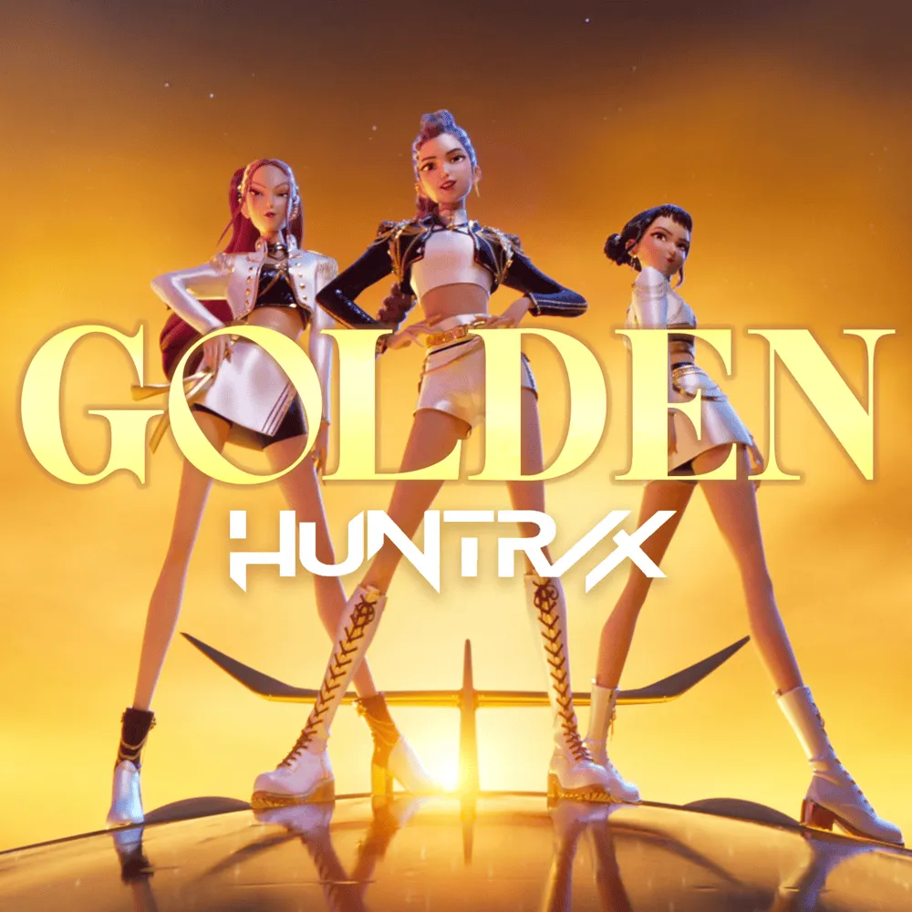
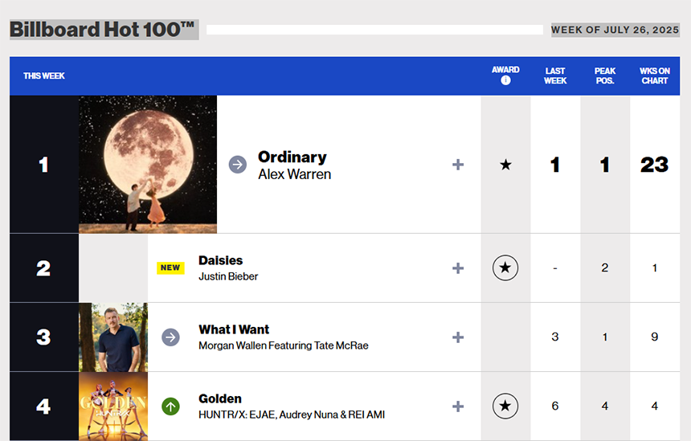

안녕하세요, 라보엠입니다.
오늘은 2025년 여름 음악계를 장악한 화제의 신곡, 케이팝 데몬 헌터스(KPop Demon Hunters) OST의 주제곡 ‘Golden’을 소개합니다. 동명의 넷플릭스 애니메이션에서 탄생한 헌트릭스(HUNTR/X)의 신곡 ‘Golden’은 애니메이션의 인기를 뛰어넘어, 실제 글로벌 K팝 신드롬의 주역으로 우뚝 섰습니다.

케이팝 데몬 헌터스 - 영화의 매력, 그리고 헌트릭스의 신화
케이팝 데몬 헌터스 | 넷플릭스 공식 사이트
케이팝 슈퍼스타 루미, 미라, 조이. 매진을 기록하는 대형 스타디움 공연이 없을 때면 이들은 또 다른 활동에 나선다. 바로 비밀 능력을 이용해 팬들을 초자연적 위협으로부터 보호하는 것.
www.netflix.com
케이팝 데몬 헌터스는 서울의 신화와 전설, 그리고 화려한 K팝 세계를 절묘하게 결합한 넷플릭스 오리지널 애니메이션입니다. 세 명의 멤버 루미, 미라, 조이가 화려한 아이돌 활동 뒤에 인간 세계를 지키는 ‘헌트릭스’로 활약하며, 라이벌 ‘사자 보이즈’와의 숨막히는 대결을 그려냈습니다. 이야기의 중심에서 ‘Golden’은 악마 사냥꾼의 숙명, 자기 자신에 대한 성장, 그리고 팀워크의 힘을 노래하고 있습니다. EDM, 일렉트로팝, 오케스트라 사운드를 섞은 편곡은 영화적 클라이맥스를 제대로 살려줍니다.
Golden - 노래의 탄생과 음악적 완성도
‘Golden’은 케이팝 데몬 헌터스의 사운드트랙 중 가장 뜨거운 반응을 얻은 대표곡입니다. 에너지 넘치는 리듬과 강렬한 후렴구, 그리고 “우리는 지금 꿈을 이루기 위해 함께 떠나는 중”이라 노래하는 가사에서 멤버들의 꿈과 자신감, 그리고 한계를 뛰어넘는 용기가 느껴집니다. 루미와 헌트릭스 멤버들이 좌절, 혼란을 이겨내고 ‘황금의 힘’을 깨닫는 순간이 극과 곡을 동시에 빛냈습니다. 음악적으로는 세련된 신스 사운드와 강렬한 드럼, 캐치한 멜로디가 여운을 남깁니다. 중독성 강한 후렴구와 여러 어쿠스틱, 전자음이 조화를 이루며, 기존 K팝 명곡들과 어깨를 나란히 할 만큼 시장성과 예술성을 동시에 인정받고 있습니다.
‘Golden’의 가사는 자기 정체성의 혼란 속에서 빛을 찾아가는 과정을 밀도 있게 그렸습니다. “I was a ghost. I was alone… Now I’m shining like I’m born to be. Cuz we are hunters, voices strong”과 같이, 자신의 내면을 직면하고 함께일 때 비로소 ‘황금’으로 빛난다는 메시지는 영화와 완벽히 맞물립니다. 이처럼 곡은 승리의 노래를 넘어, 상처와 두려움을 극복하고 자신과 팀, 그리고 사랑하는 팬들을 위해 다시 한번 무대로 올라서는 성장의 서사를 선사하고 있습니다.
빌보드 1위, 신화의 시작

‘Golden’은 넷플릭스와 K팝의 글로벌 영향력을 입증하듯 다양한 차트를 휩쓸었습니다. 음원이 공개된 이후 미국 빌보드 Hot100 차트에서 빠르게 순위가 상승, 7월 셋째 주 최종 6위, 다음 주 드디어 1위까지 올랐습니다. 특히 빌보드 Global 200과 Global Excl. US 차트에서는 비(非)실존 K팝 아티스트로서는 최초로 동시 1위를 기록하는 이정표를 세웠습니다. 사운드트랙 전체도 성과가 대단해, 호주 ARIA 앨범 차트 3주 연속 1위, 한국을 비롯한 20개 국가의 아이튠즈/스포티파이 차트 상위권을 점령하며 글로벌 K팝 신드롬을 입증했습니다. 신스팝에 EDM 거장 데이비드 게타의 리믹스가 공식 발매되는 등 시대를 대표하는 명곡으로 성장하고 있습니다. 시간이 많이 지난 현재까지도 Hot100 차트 4위를 유지하며 인기를 이어가고 있습니다.
맺음말
K팝 데몬 헌터스와 헌트릭스는 기존 실존 K팝 그룹 못지않은 팬덤을 보유하게 되었습니다. 팬들은 OST 발매와 동시에 커버 영상, 챌린지 댄스, 팬아트, 밈(meme) 등을 연이어 올리며 실제 아티스트처럼 응원하고 있습니다. ‘Golden’은 매체를 뛰어넘어, 현실과 영화의 경계를 허무는 K팝의 새로운 가능성을 보여줍니다. ‘Golden’은 올해 여름, 그리고 앞으로의 음악 신에서 반드시 기억될 이정표입니다. 뛰어난 완성도, 메시지, 차트 성적까지. 이제 K팝 데몬 헌터스와 헌트릭스의 신화는 빌보드 1위를 통해 현실이 되었습니다. 이 곡이 오늘도, 그리고 앞으로도 여러분의 하루를 환하게 비추는 황금빛 희망으로 남길 바랍니다.